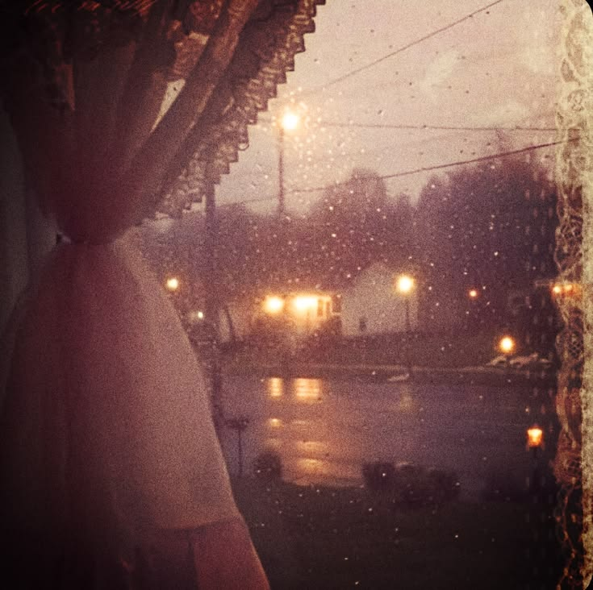

📷 little moments, forever memories
My Little Gallery
A tiny collection of inspiration, favorite things and memories. I'll add my own photos here as my little world grows! ♡

Autumn days 🍂
Little autumn moments.
♡
Favorite memories
Things I want to remember.
✿
Little inspirations
Colors, places and pretty details.
These are decorative placeholders for now. You can replace them with your own photos whenever you're ready.
← Back to my desktop